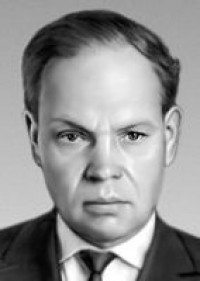
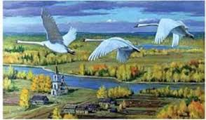

Михайло Панасович Стельмах
Hародився 24 травня 1912р. у селі Дяківці Літинського району на Вінниччині в родині незаможного хлібороба.
Перші його віршові спроби припадають на тридцяті роки, коли він по закінченні Вінницького педагогічного інституту (1933) вчителює спочатку на рідному Поділлі, а потім у школі села Літки на Київщині. Паралельно з роботою вчителя Стельмах працює і як збирач народнопісенних скарбів; пізніше (після Великої Вітчизняної війни) він деякий час вдосконалював професійні навики фольклориста на посаді наукового співробітника в Інституті фольклору та етнографії АН УРСР.


Гуси-лебеді летять...
Моїм батькам — Ганнi Iванiвнi й Панасу Дем'яновичу з любов'ю i зажурою